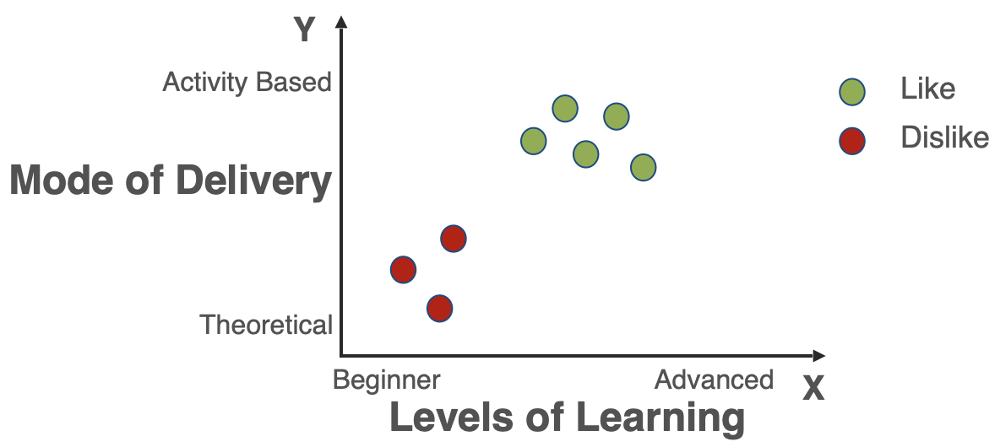
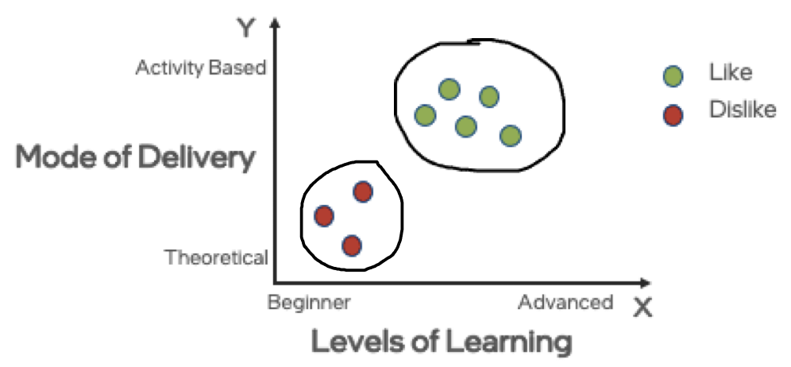
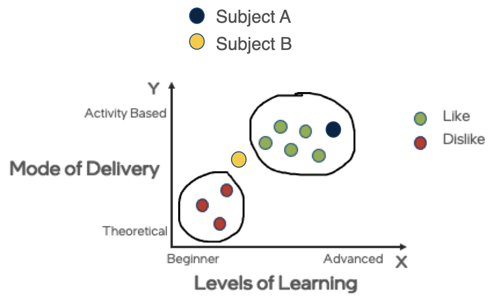
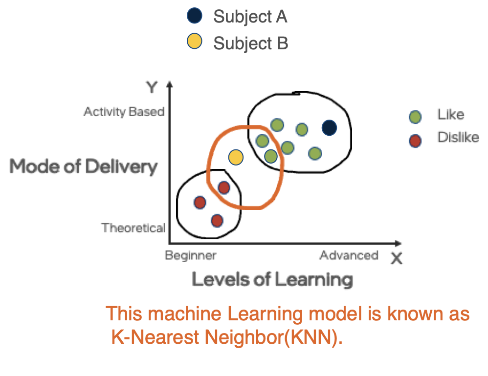

Lesson 4 - Machine Learning Algorithms
At the end of this lesson, you will be able to:
- Define and Understand the Machine Learning Algorithm.
What is Machine Learning algorithm ?
- Machine learning is a sub-category of artificial intelligence and effectively automates the process of analytical model building and allows machines to adapt to new scenarios independently.
- Machine Learning learns from the data, builds a prediction model and when new data point comes in, it can easily predict.
- More Data helps to build Better Model with Higher Accuracy.
Let’s understand through a Scenario:
Suppose Sam is a student, he likes or dislikes his subjects based on:
- Levels of Learning
- Mathematics involved
- Mode of Delivery
Let’s plot a graph to understand Sam’s choice of Subjects.
For simplicity, let’s consider Levels of Learning and Mode of Delivery involved and plot them based on Sam like and dislike.

What did you Observe?
Sam likes subject with more Activity based learning and dislikes Theory based learning.

Let’s try to classify new unknown subjects based on Sam’s past choices.
By looking at Sam’s past choices, we were able to classify unknown subject A very easily.
Let’s consider another subject B which falls somewhere in between both categories.
It’s difficult to classify Subject B based on Sam’s past choices.

Figure 9.7. Classify Sam's new subjectsMachine Learning model designed on Sam’s past choices finds the nearest neighbors of subject B.
Based on the nearest neighbors, a subject is classified as Like or Dislike.
Since B has more number of liked subjects as neighbors. It is classified as Liked subject.

We have seen what is Machine Learning. In the next lesson, we will look at three broad categories of Machine Learning models.